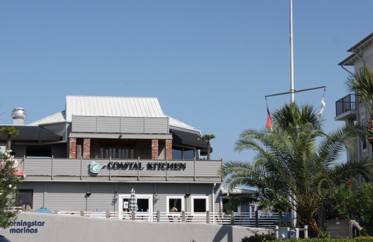
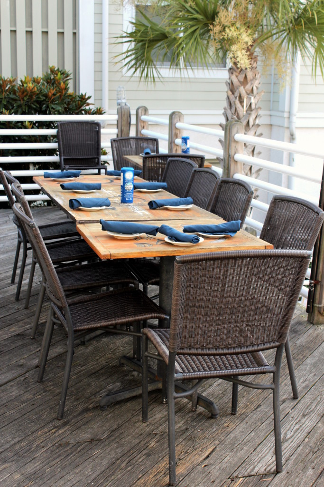

.png)
.PNG)
.PNG)
.PNG)
.PNG)
.PNG)
.JPG)
.JPG)
.PNG)
.PNG)


Happy Weekend! Are you hungry again? In our last post, I believe we had just finished a huge slice of Italian cream cake and a cup of coffee. Today I am only going to make you suffer through one meal because we found a street of homes on the island that I know you are going to love, and I am dying to show them to you! So let’s talk about dinner for a minute, and then we can talk about houses. 🙂
I had breakfast and lunch in our hotel room that particular day, but for dinner that night we went out to Coastal Kitchen with some friends and their cute daughter. The restaurant sits right by the marina on the causeway.
They have a nice area for outside dining, but it was so warm, we chose the air conditioned dining room inside. The white tablecloths make it feel a little more fancy than most of the other restaurants at which we dine, but you can still dress casually there.
 Between all of us, we had quite an assortment of dishes.
Between all of us, we had quite an assortment of dishes.
lobster ravioli…
broiled Grouper…
fried shrimp…
and my filet mignon.
I believe all of us thought our dishes were very good, but the husband of our friends thought his wife’s lobster ravioli was better than his grouper. (Isn’t that the way it always goes? 🙂 )
Because the restaurant is literally right beside the marina, we took a walk after dinner to see the boats.
(Hi Lucy! 🙂 )
Lots of boats! And then on the other side of the restaurant are these beautiful condominiums with their perfect views of the marsh.
Many of the units are available for rent. Click here for info on one of them.
Of course after our walk, I wanted something sweet to eat. (My BIG weakness. 🙁 ) So we drove into town to find a dessert (or two…or three…or four!) at Small Cakes.
So many choices!
And yes we did end up with a box full!
Chocolate with pink buttercream, lemon, German chocolate, and red velvet. (The chocolate with pink frosting was my favorite…mmmm 🙂 )
And that was the end of the food for the day, but…after dessert we decided to go for a drive around the island. That’s when we found a street or two with these beautiful homes.
(The lighting is a little funky here because the photos were taken at sunset.)
Check out the porch railing on the next one.
And don’t you like that porch swing there?
This was the most traditional looking one to me.
(Loved the landscaping. 🙂 )
There were several that were still under construction.
I did some research on the neighborhood and found a few listings for this next one. You can see more information about it here.
And there is also information on this beauty here (including some photos of the interior.) I would really like to replace our front door with some double doors like those.
This one was my favorite of them all. When we were first approaching it, I thought it was a chapel! There are photos of it on Zillow, but they must have been taken when the house was first built. The exterior boards have not weathered in their photos.
And one last one for you…
Didn’t you like all the different materials used on these homes…the board and batten, the tabby shells, the shingles, the metal roofs? Just perfect.
I’ll be back with part 3 next, and we are going to take a little trip off the island for this one. There are some very amazing houses (and a yummy meal!) for you to see there.
I hope you have a relaxing weekend. 🙂
 Until next time…
Until next time…


.PNG)
Lovely homes! I so enjoy just driving around in historic neighborhoods and looking at all th eye candy. My daughter lived in Tallahassee for the past 5 years and we enjoyed driving up to Thomasville a few times. We always eat at Jonah’s (which I highly recommend) and had cupcakes from Small Cakes. They are so delish! We were there a few weeks ago and I had a sangria cupcake…oh my! That was our last trip for a while since she is moving to Europe. She leaves on Friday! There are some quaint shops and beautiful homes there. Have a lovely day!
Hugs, Vicky
——————————————————————–
Congratulations on your daughter getting to see Europe – up close and personal! 🙂 Strangely enough, I have never been to Thomasville, but I hope to go there this fall. The Annie Moses Band is performing there, and I hope to see the concert. I looked at Jonah’s menu, and it looks fabulous with quite an extensive range of entrees (and appetizers!) We just might eat there before the concert. Yum!
Kelly
Beautiful photos of houses. I like that they were all different! Thanks for sharing St. Simone’s Island with us and those yummy cupcakes!
Kelly,
What a fun trip. The pictures of the marina reminded me of the marina in Santa Barbara. The homes you shared reminded me of homes you’d expect to see in Cape Cod. I enjoy your tours of homes when you’re traveling, that is exactly what I would want to do in addition to all the travel eating and touring.
xo,
Karen
Yum and fun! Having seen all of the entrees I would have picked the lobster ravioli. (I often want to walk around a restaurant and see what everyone else is having before I order so I can say, “I’ll have what she is having.”) And, my favorite house is the one with the interesting porch swing. I have been thinking about those cool doors lately too but they just don’t go with our house. However, if we ever move, great doors are on the list. This week we have had family in the mountains but I managed to slip away one night for a girlfriend’s birthday to the Grove Park Inn Spa in Asheville. If you ever get the chance, it is fabulous! I loved all of the photos in this post, definitely makes me want to visit St. Simon’s Island.
What an amazing trip. I’ve only been to St Simon once and it was years ago, so now I must go again! Love seeing the houses and oh, my, the cupcakes…so wish I had one now!
I have really enjoyed these post on St Simons Island. It is one of my favorites places, so calming and relaxing.
Such mouth watering posts. Why is it some of us have to finish a meal with a sweet? Hand raised! 🙂 Those cupcakes looked delish! House and boat envy galore! I could have just spent hours hanging at the Marina. Coastal life, yes please!
Just dreamy! And now I want a cupcake! 😉
Cupcakes and houses! What could be a better way to wake up
on Saturday?! 🙂 Loved both of the posts about St. Simmons! And the main entrees of all your meals–Mercy– ! Both times it made me so hungry! So sorry you can’t have the shrimp anymore:( I have been having some wonderful haddock while on the shore. Also, scallops and fried oysters!! Going to travel the eastern coast from JAX to Boca this coming week and will be eating more FL seafood! Will go back and study ALL the beautiful southern homes of the Island area. Thanks, Kelly! Looking forward to the next post!! Going to try to duplicate the Cupcake board!! So cute!
Too gorgeous, Kelly! Thank you for the last two posts. I am glad you found the houses to share with us. They remind me of some of the houses on Whitemarsh Island between Savannah and Tybee Island. When we go, sometimes I have to ride by the same homes I have seen dozens of times. Double doors..love them. Your trip looked like a lot of fun. That lobster ravioli looked pretty good to me too!
Not to mention the cupcakes, my mouth is watering! I even loved the lettering on the “Maybe a cupcake will help,” board, and the scrollwork of the board itself!
I am looking forward to the next post. In the meantime, I will go eat breakfast. You made me hungry!
Happy weekend,
Sherry